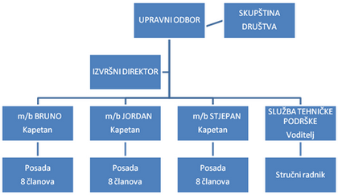

Dalmacija ribolovd.o.o.
Dalmacija ribolovd.o.o.Ulov sitne plave ribe.
Zaslužiti vjernost kupaca ponudom proizvoda, jadranske plave ribe pripravljene na tradicionalan način uz odgovarajuću brigu za okoliš.
Održati kvalitetu i jedinstvenost ponude tradicionalne pripreme plave ribe Jadrana.
Vlastiti ulov za vlastitu proizvodnju, za probirljivog kupca.
Iskoristiti stvorene prednosti ljudskih i financijskih resursa za iskorak u lovu i preradi ribe u otvaranju novog tržišnog prostora, stvarajući preduvjete partnerstva, potencijalnim ulagačima kojima privlačnost misije, prihvatljivost vizije, realnost cilja budi interes partnerstva u strategiji razvoja ribarstva koju nudi Dalmacija ribolov.
Ribarstvo je tradicionalna djelatnost naše obale i otoka i izvor egzistencije za veliki dio obalnog i otočnog stanovništva. Ribarstvo Zadarske županije je najznačajnije zastupljeno u ribolovu sitne i krupne plave ribe, kroz uzgoj tune te preradu i soljenje sitne plave ribe. Najzastupljeniji alati u gospodarskom ribolovu su mreže plivarice (tunare, srdelare i palamidare), pridnene povlačne mreže koće te mreže stajačice. Ulov zadarske županije predstavlja oko 35% od ukupnog ulova u Republici Hrvatskoj. Najznačajnije vrste u ulovu u ovoj županiji su srdela i inćun koje su baza za prerađivačku industriju kao i za uzgoj tuna. Gospodarski ribolov i uzgoj obavlja 60 tvrtki.
Posebno je važno izdvojiti uzgoj tune koji je u posljednjim godinama najaktivniji dio marikulture koji na sebe veže puno drugih aktivnosti u ribolovu i uzgoju i grana je koja potiče cjelokupni razvoj ribarstva. Uzgoj tune je najvažniji dio marikulture koji uz sebe veže brojne kooperante u ulovu sitne plave ribe, troši oko 55% ulova domaće sitne plave ribe dok se ostatak uvozi. Ostatak potrebne količine se uvozi. Sitna plava riba lovi se tijekom cijele godine, osim u periodu između 15.12. - 15.01. kada je lovostaj za sitnu plavu ribu.
U Hrvatskoj je u sedam primorskih županija registrirano 209 brodova između 15 i 40 metara koji se bave ulovom sitne plave ribe - plivaričari. Od tog je broja u zadarskoj županiji ukupno 95 brodova. Ribarskih brodova plivaričara većih od 24 m na području zadarske županije ima 28 što znači da Dalmacija ribolov sa svoja tri broda u toj kategoriji sudjeluje sa 10,7% flote.

MOĆ | SNAGA |
| stručno osposobljeni | provjerena logistika |
| poslovno organizirani | vlastiti izvori financiranja |
| iskustveno osnaženi | podrška lokalne zajednice |
| poslovnoj javnosti poznati | osvjedočena strategija razvoja |
tri vlasnika — jedan cilj | |